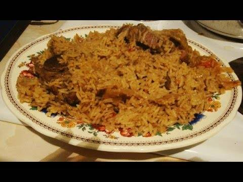

Beef pilau

Pilau is a Kenyan food which originated from Costal Kenya because of their love for spices. The food can be prepared from beef and rice or chicken and rice or just rice alone.
Ingridients
- 250g beef
- 400g pishori rice, washed and soaked for 15 minutes
- 2 - 4 onions chopped
- 1/2 tsp turmeric powder
- 1/2 coriander powder
- 1/2 cumin powder
- Vegetable cooking oil
- 1/2 tsp whole pepper
- 2 cinnamon sticks
- 1/2 tsp garlic paste
- salt
- black pepper
- tomatoes
- 2 cloves 2 cardamon
Procedure
-
Cut the meat into pieces and wash, then boil with some water, 1 tsp each of ginger and garlic paste, 1 tsp of salt, tsp of black pepper, 1 grated tomato and 1 grated onion.
-
When the meat is tender, drain it and set aside. Keep the soup for cooking rice.
-
Heat the sufuria on a medium heat and add the oil. Then add the whole spices that is cumin, cardamom, Pepper, cinnamon and cloves. Once they splutter in the oil, add chopped onions.
-
Fry them until translucent while stirring them with a spoon. If you want darker pilau, fry the onions until they are dark and caramelised. Then add tumeric and coriander powder. Let them fry to a few minutes then add the garlic paste and a bit of chopped coriander.
-
Now you can add the boiled meat the stir together for 2 minutes. Then add soup and some salt. Let the soup simmer and taste for the salt. Make sure you put enough salt because of the rice.
-
When the soup starts boiling, drain the rice and add rice to the soup. Sprinkle a bit of coriander on it and stir a little. Let it cook on a high heat for 3 minutes then reduce to a medium heat and keep cooking while covered until the water finishes.
- Make sure you stir every now and then to make sure all the rice is cooked evenly and perfectly. Then you can reduce the heat to a very low heat and leave it to continue steaming for 5 minutes. Switch off the heat and serve with Kachumbari.
For comparison you can check these other recipes for on google.